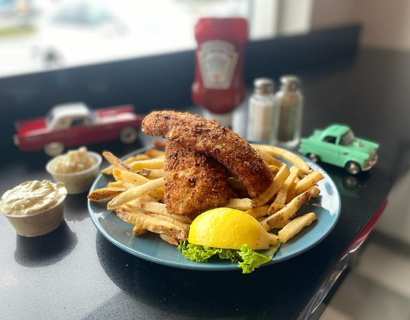

Thinderbird Diner


Overview
Cuisine: Burgers, Fish, Wings, Shakes & More
Price: $$ - $$$
Vernon’s Thunderbird Diner is a business venture conceived in 2007 by Hammonds Plains’ long-standing resident and business owner, Vernon Kynock. The diner is a way for Vernon to have fun, meet people in his golden years and for there to be a meeting place for people to enjoy amazing and healthy food. It is also a way for Vernon to share his love and enthusiasm for antique cars.
Reviews
Linda Marshall
11/12/2024

Love going here. The fishcakes are awesome. Downfall is the hammonds plains traffic.
Billy MacDougall
11/7/2024
All 7 of us had a great meal and a friendly attentive server named Allison. We're heading back for the corned beef and cabbage next!
Mario De Marinis
11/2/2024
We thoroughly enjoyed our visit to Vernon’s. It was a fun atmosphere with great service and food. I am definitely going to stop again.